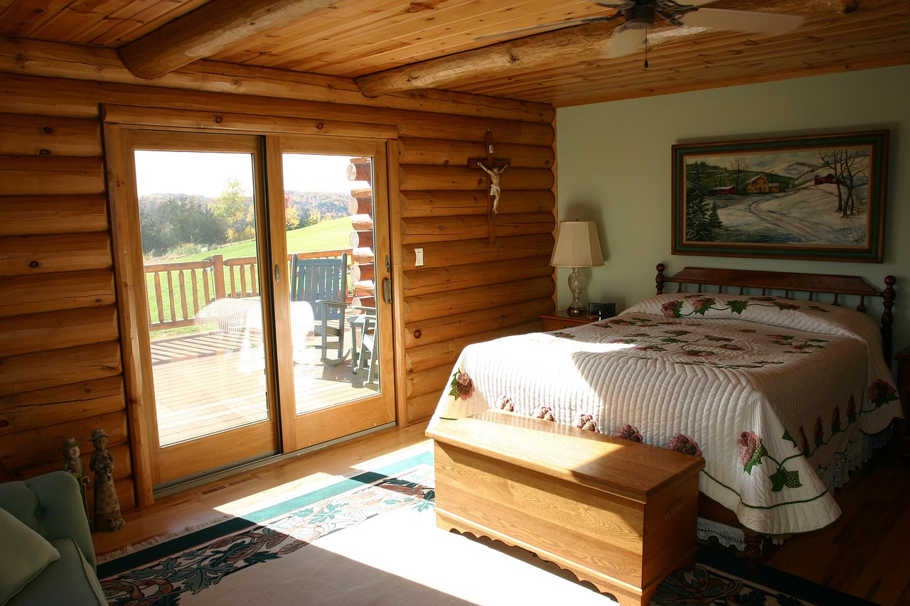
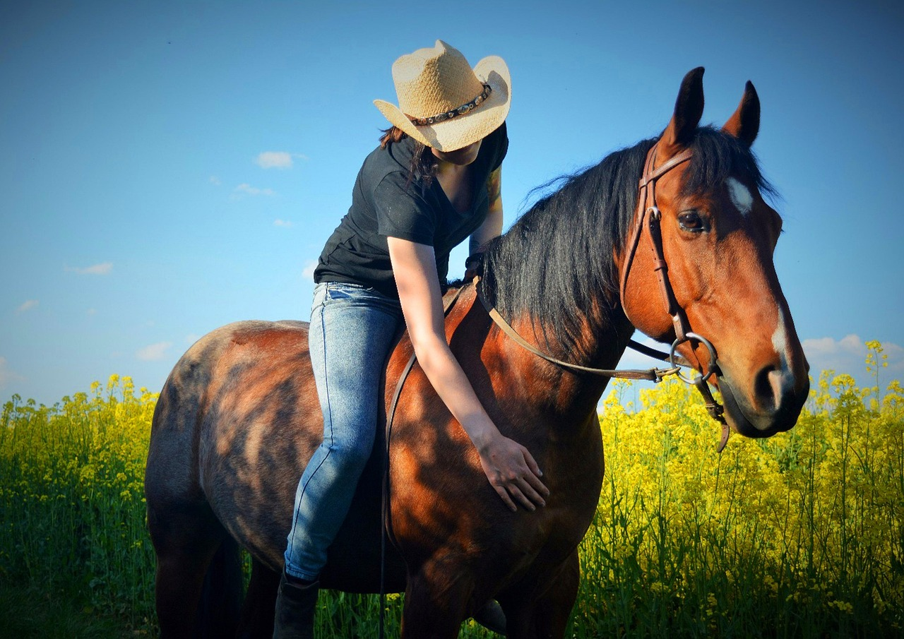

Bem-vindo ao Hotel Fazenda Cantinho da Paz!
Seu Refúgio no Interior de Minas Gerais
Aninhado entre as montanhas e o verde exuberante do interior de Minas Gerais, o Hotel Fazenda Cantinho da Paz é o destino ideal para quem busca tranquilidade, contato com a natureza e uma experiência autêntica da vida rural. Localizado na charmosa cidade de Santa Luzia do Vale, nosso hotel combina hospitalidade acolhedora, paisagens deslumbrantes e atividades que vão encantar toda a família.
Aqui, o canto dos pássaros desperta os hóspedes, o aroma do café passado na hora paira no ar e a brisa do campo traz um convite irrecusável para relaxar. Seja para uma escapada romântica, uma viagem em família ou um fim de semana de descanso, o Cantinho da Paz espera por você.
No Hotel Fazenda Cantinho da Paz, cada dia é uma nova descoberta. Venha viver essa experiência autêntica e inesquecível!
Reserve sua estadia agora e venha desfrutar do melhor que Minas Gerais tem a oferecer!
-

Sabores da Fazenda – Comida Mineira Feita com Amor
Nada como uma boa refeição caseira para aquecer a alma! No Cantinho da Paz, valorizamos a autêntica culinária mineira, preparada com ingredientes frescos e muito carinho. Nossa cozinha artesanal traz pratos tradicionais como o tutu de feijão, frango com quiabo, leitão à pururuca e doces caseiros feitos no fogão a lenha. O cheirinho de pão de queijo saindo do forno e o café coado na hora são apenas algumas das delícias que esperam por você.
Nosso restaurante é um convite para saborear cada momento com calma, apreciando a vista para o campo e o calor da hospitalidade mineira. -

Aconchego e Simplicidade – Quartos para um Sono Tranquilo
No Cantinho da Paz, cada detalhe dos quartos foi pensado para proporcionar conforto e bem-estar. Com decoração rústica e toques acolhedores, nossas acomodações oferecem a tranquilidade necessária para noites revigorantes. Todos os quartos possuem camas confortáveis, varanda com vista para a natureza.
Para casais em busca de romance, dispomos de quartos com suíte. Já para famílias, oferecemos quartos amplos e equipados para receber adultos e crianças com total comodidade.
Aqui, você dorme ao som da natureza e acorda com o frescor do campo, pronto para um novo dia de aventuras e descanso. -

Atividades para Todos – Natureza, Lazer e Aventuras
No Cantinho da Paz, as experiências vão muito além do conforto. Oferecemos uma variedade de atividades para todas as idades, garantindo dias de diversão e conexão com a natureza:
🌿 Trilhas e Caminhadas – Explore trilhas rodeadas por mata nativa, com paisagens de tirar o fôlego e a possibilidade de avistar animais silvestres.
🐴 Passeios a Cavalo – Experimente a sensação de cavalgar pelos campos, respirando o ar puro da fazenda.
🐄 Vivência Rural – Participe do dia a dia da fazenda, ordenhando vacas, alimentando os animais e conhecendo a rotina dos agricultores locais.
🎣 Pesca Esportiva – Aproveite momentos tranquilos pescando no lago da fazenda, com peixes como tilápias e tambaquis.
Quer relaxar? Aproveite nossas redes na varanda, um bom livro e o som dos pássaros para renovar as energias.